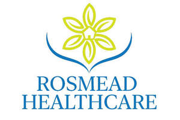

Trade Mark Journal No.2025/039 26 September 2025
UK00004264736 16 September 2025 (35,41,43,44,45)

- Class 35
- Management of health care clinics for others; Administrative management of health care clinics.
- Class 41
- Providing of training in the field of health care and nutrition; Recreational services for the elderly; Educational assistance services for persons with individual needs.
- Class 43
- Respite care services in the nature of adult day care; Retirement home services; Nurseries, day-care and elderly care facilities; Catering services for nursing homes; Homes for the elderly [retirement]; Accommodation services; Providing temporary accommodation; Provision of temporary accommodation; Providing assisted living facilities [temporary accommodation]; Retirement homes; Homes (Retirement -); Catering services for retirement homes; Old people's home services.
- Class 44
- Health care; Medical care; Palliative care; Nursing care; Nursing care services; Medical care services; Managed health care services; Home health care services; Nursing care (Provision of -); Provision of nursing care; Psychological care; Provision of health care services; Home-visit nursing care; Respite care (provision of); Health care consultancy services [medical]; Health care services for treating Alzheimer's disease; Consultancy relating to health care; Outpatient and inpatient care services; Consulting services relating to health care; Services for the provision of medical care information; Provision of health care services in domestic homes; Medical care and analysis services relating to patient treatment; Respite care services in the nature of home nursing aid; Information services relating to health care; Advisory services relating to health care; Respite care services in the nature of nursing aid services; Health care relating to remedial exercise; Consultancy services relating to health care; Health care services offered through a network of health care providers on a contract basis; Providing long-term care facilities; Professional consultancy relating to health care; Providing health care information by telephone; Nursing home services; Hospital nursing home services; Convalescent home services; Rest home services; Home nursing aid services; Homes (Nursing -) services; Medical house call services; Nursing homes; Homes (Nursing -); Homes (Convalescent -) services; Medical nursing services; Nursing services (Medical -); Advice relating to the personal welfare of elderly people [health]; Advice relating to the medical needs of elderly people; Providing information relating to nursing care services; Convalescent homes; Homes (Convalescent -).
- Class 45
- Providing non-medical in-home care services for individuals; Providing patient advocate services to hospital patients and patients in long term care facilities; Companionship services for the elderly and disabled.
Pasan Pulasthi Nissanka Nissanka Mudiyanselage